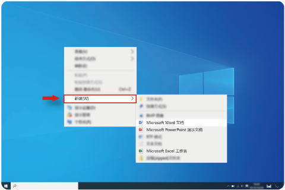

- 若您的计算机预装了 Office 家庭和学生版，激活后可永久使用 Office 办公软件。
- 若您的计算机未预装 Office 家庭和学生版，您可根据需要单独购买正版 Office 软件。
Windows 系统联网激活后，右键单击桌面空白处，新建一个 Word、Excel 或 PPT 文档，打开新建文档，根据指引完成 Office 激活。

- 如果 Office 激活失败，请更换其他网络服务或者等待约 2 个小时后再尝试。您也可以拨打 Office 激活支持热线进行人工激活。
- 详细操作指导，请访问： https://consumer.huawei.com/cn/support/office-guide/